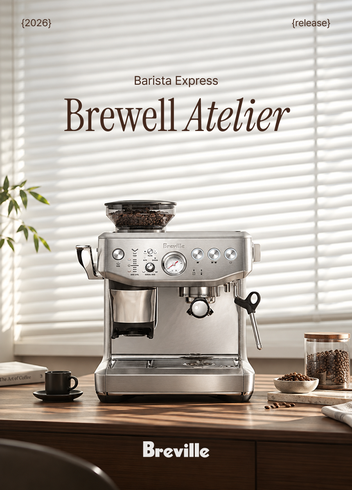
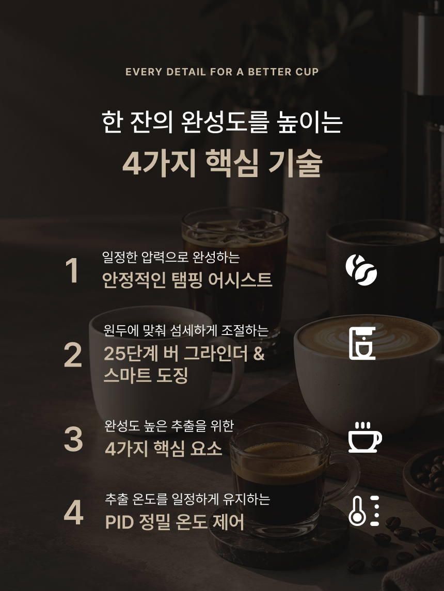
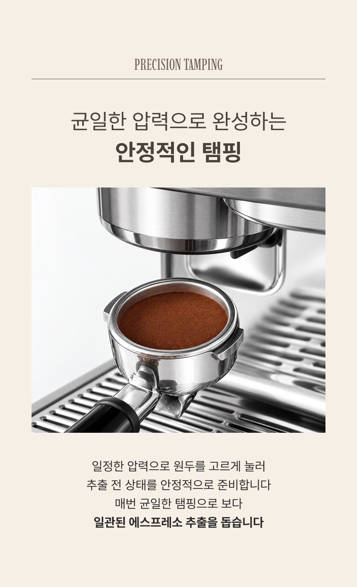
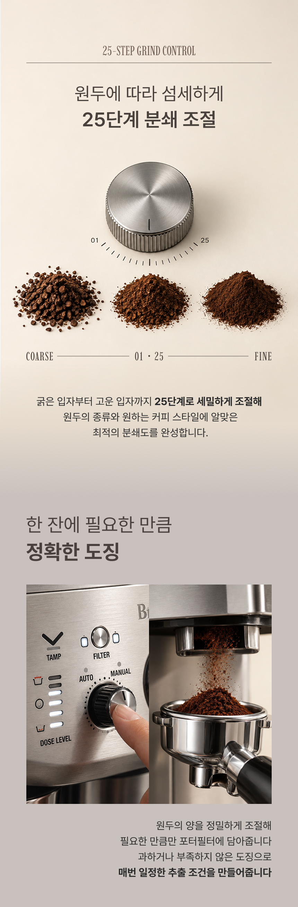
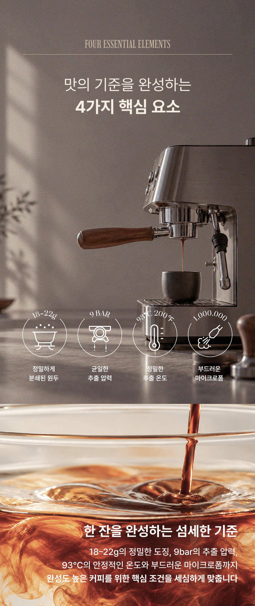
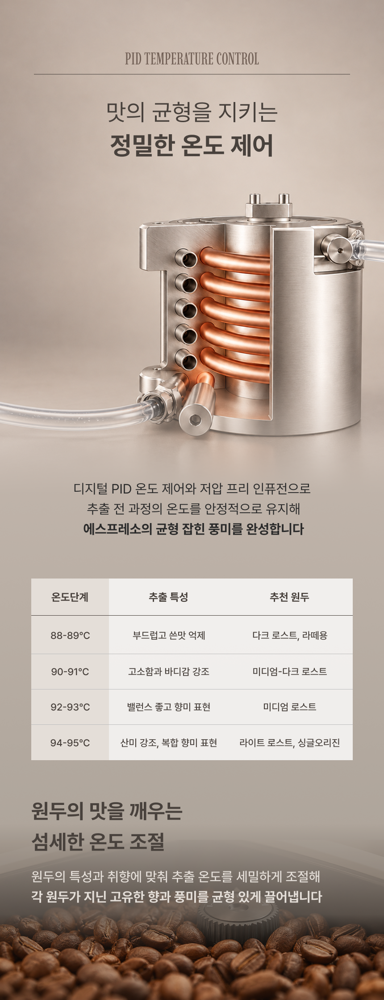
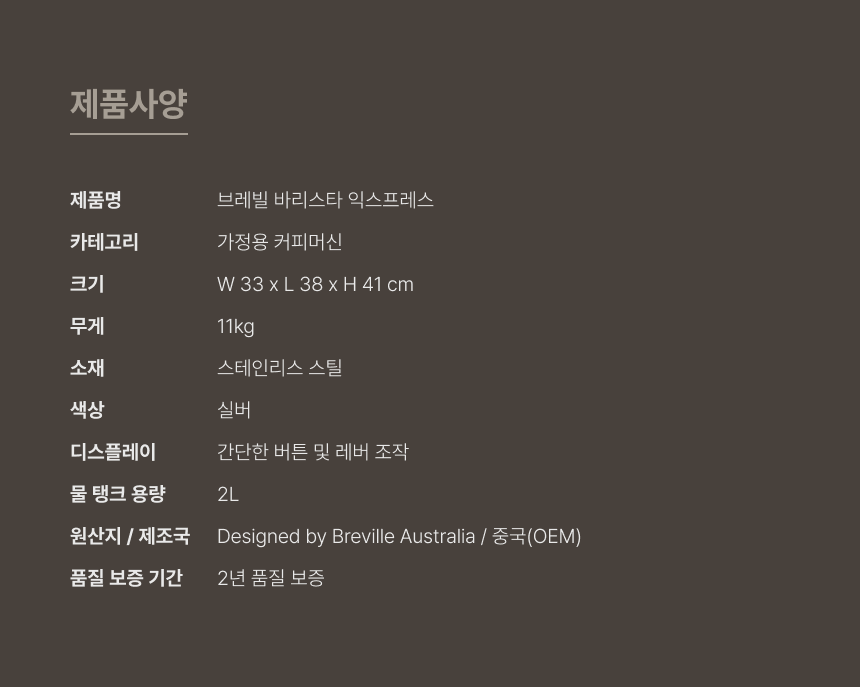

BREVILLE
원두의 분쇄부터 추출까지, 완성도 높은 한 잔의 과정을 담은 커피머신 상세페이지
Design Point
-
01
프로젝트 개요 및 기획 의도
에스프레소 한 잔이 완성되는 과정을 중심으로 제품의 주요 기능을 자연스럽게 전달하고자 했습니다 그라인딩부터 도징, 추출 온도까지 사용 흐름에 따라 정보를 구성해 전문적인 성능을 쉽게 이해할 수 있도록 기획했습니다
-
02
기능 중심의 정보 구조
25단계 분쇄 조절과 정밀 도징, PID 온도 제어 등 핵심 기능을 단계별로 구분했습니다 기능 이미지와 간결한 설명을 함께 배치해 복잡한 기술 정보를 직관적으로 확인할 수 있도록 구성했습니다
-
03
따뜻한 프리미엄 톤앤매너
아이보리와 에스프레소 브라운을 중심으로 차분하고 따뜻한 분위기를 연출했습니다 스테인리스 소재와 커피의 질감이 돋보이는 이미지, 여유 있는 여백을 활용해 제품의 전문성과 감성적인 무드를 함께 표현했습니다






